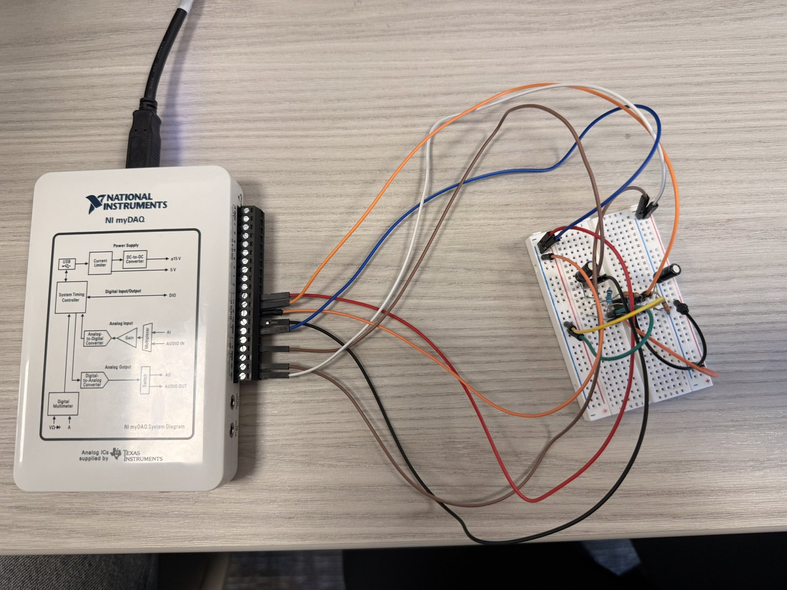
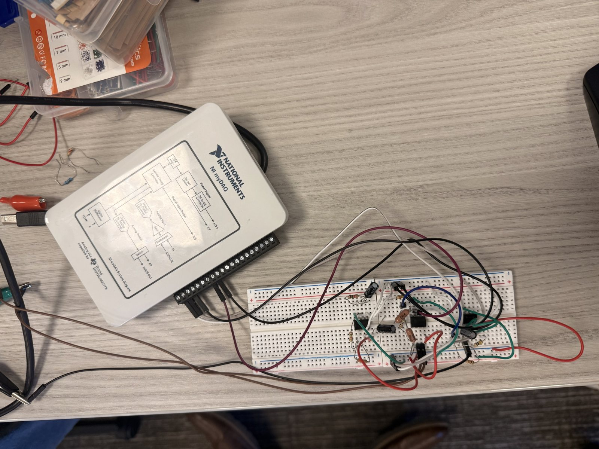
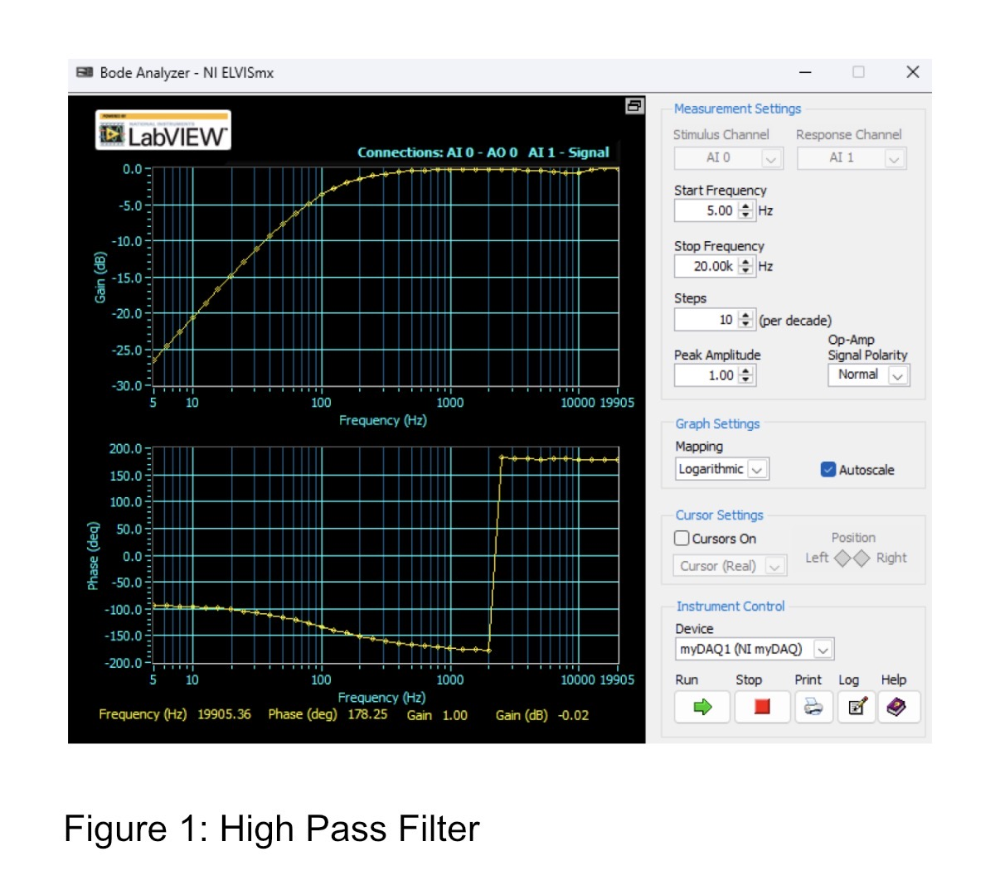
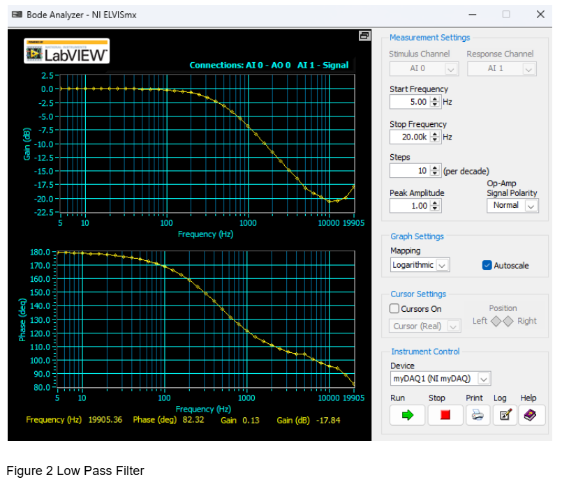
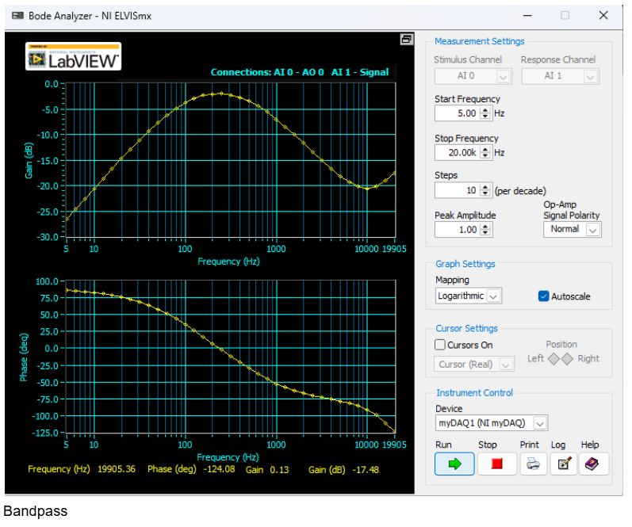

Project Overview
This laboratory project connected circuit theory with measured hardware behavior. I built analog filter circuits on a breadboard, used an NI myDAQ to excite and measure each circuit, and reviewed Bode responses to determine how useful frequency ranges were passed or attenuated.


Measured Frequency Response
The Bode Analyzer swept the circuits from 5 Hz to 20 kHz with 10 measurement steps per decade. The resulting gain and phase plots provided direct evidence of each circuit's frequency-selective behavior.



Engineering Workflow
- Selected component values and assembled each circuit on a breadboard.
- Connected the input and output channels to the NI myDAQ.
- Applied a controlled logarithmic frequency sweep through NI ELVISmx.
- Compared measured gain and phase behavior across filter configurations.
- Used the results to connect physical circuit behavior with filtering concepts.
Skills Demonstrated
- Analog circuit construction and breadboard troubleshooting.
- Instrumentation setup and channel verification.
- Bode plot interpretation and frequency-response analysis.
- Connecting theoretical filter behavior to measured hardware results.